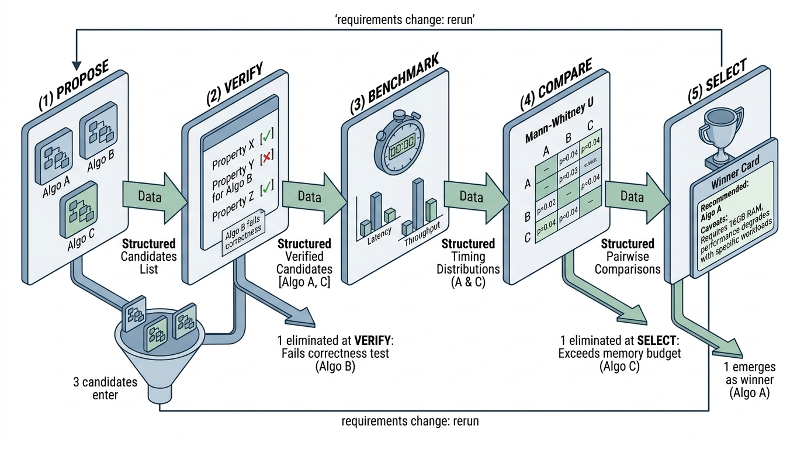

Prerequisites
This section synthesizes everything from the chapter. Section 15.1 introduced the complexity-correctness trade-off space, data structure taxonomies, and systematic candidate enumeration. Section 15.2 covered program synthesis with property-based testing, benchmarking methodology, and statistical comparison with Mann-Whitney U. Here we assemble these components into a single, reusable pipeline that integrates with the Discovery Workbench from Chapter 6.
An Algorithm Benchmark pipeline automates the cycle that most developers perform manually: propose candidates, implement them, test for correctness, measure performance, and pick the winner. By codifying this cycle as a reproducible pipeline, we gain three advantages. First, the decision becomes auditable: the benchmark report records exactly what was tested, under what conditions, and with what statistical confidence. Second, the pipeline is rerunnable: when requirements change (larger data, tighter latency budget, new hardware), you rerun the benchmark with updated parameters rather than starting from scratch. Third, the pipeline is composable: it plugs into the broader Discovery Workbench alongside the architecture decision records from Chapter 14 and the implementation workflows in Chapter 16.
1. The Pipeline Architecture
Which of three candidate algorithms should handle your production workload: the one that is provably correct but slow, the one that is fast but approximate, or the one whose performance hinges entirely on data distribution? Most teams settle this question with a quick notebook timing test and an educated guess. The five-stage pipeline replaces that guess with a process that mirrors the scientific method. Each stage maps to a scientific step: formulate hypotheses (propose candidates), design experiments (build benchmarks), collect data (run measurements), analyze results (statistical tests), and draw conclusions (select winner). This parallel is deliberate; algorithm selection is itself a form of empirical inquiry, as discussed in Chapter 2. Figure 15.3 illustrates this five-stage flow, showing how each stage consumes the previous stage's output and narrows the candidate set toward a single, statistically grounded recommendation.
Translating that scientific framing into software requires a precise data model that captures candidates, experimental conditions, and results in a single structure capable of flowing through each stage and serializing for later audit.
Choosing the wrong algorithm for a production workload can mean the difference between a query that completes in milliseconds and one that times out, silently dropping results. Teams that skip rigorous benchmarking often discover this gap only after deployment, when the cost of switching is highest.
An algorithm benchmark pipeline takes a problem specification, generates candidate solutions, verifies each for correctness, measures performance under controlled conditions, and outputs a statistically grounded recommendation. Manual selection ("I tried it and it felt faster") is neither reproducible nor defensible; a pipeline replaces subjective impressions with quantified evidence and explicit caveats. The mechanism: all candidates share a uniform function signature, the harness runs identical inputs through each, collects timing distributions, and applies nonparametric tests to distinguish real differences from noise. Use this approach when two or more viable candidates exist and the cost of choosing wrong is nontrivial. For problems with a single textbook solution, a quick notebook timing comparison suffices. In short: if you cannot rerun your algorithm selection with one command, you do not have a selection process; you have an opinion. Figure 15.3.1 illustrates the five-stage algorithm benchmark pipeline architecture.

"""
Algorithm Benchmark Pipeline: five-stage architecture
for systematic algorithm selection.
"""
from dataclasses import dataclass, field
from typing import Callable, Any, Optional
from enum import Enum
import json
class PipelineStage(Enum):
PROPOSE = "propose"
VERIFY = "verify"
BENCHMARK = "benchmark"
COMPARE = "compare"
SELECT = "select"
@dataclass
class AlgorithmCandidate:
"""A candidate algorithm with its implementation and metadata."""
name: str
description: str
complexity_time: str
complexity_space: str
correctness_type: str # "exact" or "approximate"
implementation: Callable # the actual function
properties_passed: bool = False
timing_results: Optional[Any] = None
memory_mb: float = 0.0
@dataclass
class PipelineConfig:
"""Configuration for the benchmark pipeline."""
problem_description: str
input_sizes: list[int] = field(default_factory=lambda: [100, 1000, 10_000])
input_distributions: list[str] = field(default_factory=lambda: ["random", "sorted", "adversarial"])
warmup_iterations: int = 5
benchmark_repetitions: int = 100
significance_level: float = 0.05
min_effect_size: float = 0.1 # minimum meaningful rank-biserial correlation (defined in Stage 4)
memory_budget_mb: float = 1024.0 # 1 GB default
@dataclass
class PipelineResult:
"""Complete result from the benchmark pipeline."""
config: PipelineConfig
candidates: list[AlgorithmCandidate]
comparisons: list[dict]
winner: Optional[str]
recommendation: str
caveats: list[str]
def to_json(self) -> str:
"""Serialize for the Discovery Workbench."""
return json.dumps({
"problem": self.config.problem_description,
"candidates": [
{
"name": c.name,
"complexity_time": c.complexity_time,
"complexity_space": c.complexity_space,
"correctness": c.correctness_type,
"properties_passed": c.properties_passed,
"memory_mb": c.memory_mb,
}
for c in self.candidates
],
"winner": self.winner,
"recommendation": self.recommendation,
"caveats": self.caveats,
}, indent=2)
2. Stage 1: Propose Candidates
The first stage generates algorithm candidates for the problem. The stage applies the systematic enumeration from Section 15.1, producing at least three candidates from different design paradigms. For our running example (finding duplicate records by similarity), we propose brute-force cosine similarity (where cosine similarity measures the angular closeness of two vectors, yielding a value from -1 for opposite directions to 1 for identical directions), sorted-projection indexing, and locality-sensitive hashing (LSH).
"""
Stage 1: Propose three algorithm candidates for
duplicate detection by cosine similarity.
"""
import numpy as np
from typing import List, Tuple, Set
# Type alias for the function signature all candidates must share
# Input: (data matrix, similarity threshold) -> set of (i, j) pairs
DuplicateFinder = Callable[[np.ndarray, float], Set[Tuple[int, int]]]
def propose_brute_force() -> AlgorithmCandidate:
"""Candidate 1: pairwise cosine similarity via matrix multiplication."""
def find_duplicates_brute(data: np.ndarray, threshold: float) -> Set[Tuple[int, int]]:
# Normalize rows to unit vectors
norms = np.linalg.norm(data, axis=1, keepdims=True)
norms[norms == 0] = 1.0 # avoid division by zero
normalized = data / norms
# Cosine similarity matrix via dot product
sim_matrix = normalized @ normalized.T
# Extract pairs above threshold (upper triangle only)
pairs = set()
n = data.shape[0]
for i in range(n):
for j in range(i + 1, n):
if sim_matrix[i, j] >= threshold:
pairs.add((i, j))
return pairs
return AlgorithmCandidate(
name="brute_force_cosine",
description="Full pairwise cosine similarity via matrix multiply",
complexity_time="O(n^2 * d)",
complexity_space="O(n^2)",
correctness_type="exact",
implementation=find_duplicates_brute,
)
def propose_sorted_projection() -> AlgorithmCandidate:
"""Candidate 2: sort by random projection, scan within window."""
def find_duplicates_sorted(data: np.ndarray, threshold: float) -> Set[Tuple[int, int]]:
n, d = data.shape
# Normalize
norms = np.linalg.norm(data, axis=1, keepdims=True)
norms[norms == 0] = 1.0
normalized = data / norms
# Project onto a random unit vector
proj_vec = np.random.randn(d)
proj_vec /= np.linalg.norm(proj_vec)
projections = normalized @ proj_vec
# Sort by projection value
order = np.argsort(projections)
sorted_data = normalized[order]
sorted_proj = projections[order]
# Scan with adaptive window: two points with cosine sim >= threshold
# have projection difference <= sqrt(2(1 - threshold)), because for
# unit vectors the squared Euclidean distance equals 2(1 - cos(theta))
max_proj_diff = np.sqrt(2 * (1 - threshold)) + 0.01 # small margin
pairs = set()
for i in range(n):
j = i + 1
while j < n and (sorted_proj[j] - sorted_proj[i]) <= max_proj_diff:
cos_sim = float(sorted_data[i] @ sorted_data[j])
if cos_sim >= threshold:
# Map back to original indices
orig_i, orig_j = int(order[i]), int(order[j])
pairs.add((min(orig_i, orig_j), max(orig_i, orig_j)))
j += 1
return pairs
return AlgorithmCandidate(
name="sorted_projection",
description="Sort by random projection, scan within distance window",
complexity_time="O(n log n + n * w * d)",
complexity_space="O(n)",
correctness_type="exact",
implementation=find_duplicates_sorted,
)
def propose_lsh() -> AlgorithmCandidate:
"""Candidate 3: locality-sensitive hashing with random hyperplanes."""
def find_duplicates_lsh(
data: np.ndarray, threshold: float,
n_bits: int = 12, n_tables: int = 6,
) -> Set[Tuple[int, int]]:
n, d = data.shape
norms = np.linalg.norm(data, axis=1, keepdims=True)
norms[norms == 0] = 1.0
normalized = data / norms
pairs = set()
for _ in range(n_tables):
# Random hyperplane hashing
planes = np.random.randn(n_bits, d)
hashes = (normalized @ planes.T > 0)
# Convert boolean rows to integer hash keys
# Pack each row of booleans into a compact byte array serving as the hash key
hash_keys = np.packbits(hashes, axis=1, bitorder="little")
# Group by hash bucket
buckets: dict[bytes, list[int]] = {}
for idx in range(n):
key = hash_keys[idx].tobytes()
buckets.setdefault(key, []).append(idx)
# Compare within buckets
for bucket in buckets.values():
if len(bucket) > 1 and len(bucket) < 200: # skip very large buckets
for bi in range(len(bucket)):
for bj in range(bi + 1, len(bucket)):
ii, jj = bucket[bi], bucket[bj]
cos_sim = float(normalized[ii] @ normalized[jj])
if cos_sim >= threshold:
pairs.add((min(ii, jj), max(ii, jj)))
return pairs
return AlgorithmCandidate(
name="lsh_hyperplane",
description="Locality-sensitive hashing with random hyperplane projections",
complexity_time="O(n * L * k + n * b * d)",
complexity_space="O(n * L)",
correctness_type="approximate",
implementation=find_duplicates_lsh,
)
# Propose all three
candidates = [propose_brute_force(), propose_sorted_projection(), propose_lsh()]
for c in candidates:
print(f"Proposed: {c.name} ({c.correctness_type})")
print(f" Time: {c.complexity_time}, Space: {c.complexity_space}")
print(f" {c.description}\n")
AlgorithmCandidate with a shared DuplicateFinder signature.The Discovery Workbench's literature module (Chapter 36) ingests papers from multiple sources (PubMed, arXiv, Semantic Scholar), producing duplicate entries for the same paper. Each paper is represented as a 768-dimensional embedding from a sentence transformer. The database contains 500,000 papers and grows by 1,000 daily. With a similarity threshold of 0.95, brute force requires comparing \(\binom{500{,}000}{2} \approx 1.25 \times 10^{11}\) pairs, taking hours. The sorted-projection method reduces this to minutes by exploiting the high threshold (the scanning window is narrow). LSH handles the daily incremental updates in seconds by hashing only the new papers and checking their buckets. The pipeline's role is to quantify these differences precisely and select the right algorithm for each use case (batch deduplication vs. incremental updates).
3. Stage 2: Verify Correctness
Before benchmarking, every candidate must pass correctness verification. A fast but wrong algorithm is useless (and dangerous, because its speed creates confidence in incorrect results). The verification uses property-based testing, where the test framework generates random inputs and checks that specified invariants hold for every generated case, following the pattern from Section 15.2.
"""
Stage 2: Verify correctness using property-based testing.
Properties for duplicate-detection algorithms.
"""
from hypothesis import given, settings, HealthCheck
from hypothesis import strategies as st
import numpy as np
def verify_duplicate_finder(
impl: Callable[[np.ndarray, float], set[tuple[int, int]]],
name: str,
is_approximate: bool = False,
) -> bool:
"""Verify a duplicate-finder implementation against correctness properties."""
errors = []
# Property 1: Symmetry. If (i, j) is found, (j, i) should not also appear
# (we canonicalize to i < j)
@given(n=st.integers(min_value=3, max_value=50),
d=st.integers(min_value=2, max_value=10))
@settings(max_examples=50, suppress_health_check=[HealthCheck.too_slow])
def prop_canonical_pairs(n, d):
data = np.random.randn(n, d)
pairs = impl(data, 0.5)
for i, j in pairs:
assert i < j, f"Non-canonical pair: ({i}, {j})"
# Property 2: Self-similarity excluded. No (i, i) pairs.
@given(n=st.integers(min_value=3, max_value=50),
d=st.integers(min_value=2, max_value=10))
@settings(max_examples=50, suppress_health_check=[HealthCheck.too_slow])
def prop_no_self_pairs(n, d):
data = np.random.randn(n, d)
pairs = impl(data, 0.5)
for i, j in pairs:
assert i != j, f"Self-pair: ({i}, {j})"
# Property 3: Identical vectors produce a pair (threshold <= 1.0)
@given(d=st.integers(min_value=2, max_value=10))
@settings(max_examples=30, suppress_health_check=[HealthCheck.too_slow])
def prop_identical_detected(d):
vec = np.random.randn(d)
data = np.vstack([vec, vec, np.random.randn(d)]) # first two identical
pairs = impl(data, 0.99)
if not is_approximate:
assert (0, 1) in pairs, "Identical vectors not detected as duplicates"
# Property 4: Orthogonal vectors excluded (cos sim = 0, threshold > 0)
@given(st.integers(min_value=2, max_value=5))
@settings(max_examples=30, suppress_health_check=[HealthCheck.too_slow])
def prop_orthogonal_excluded(d):
# Construct two orthogonal vectors
v1 = np.zeros(max(d, 2))
v1[0] = 1.0
v2 = np.zeros(max(d, 2))
v2[1] = 1.0
data = np.vstack([v1, v2])
pairs = impl(data, 0.5)
assert (0, 1) not in pairs, "Orthogonal vectors incorrectly marked as duplicates"
# Property 5: Agreement with brute force (reference oracle)
@given(n=st.integers(min_value=3, max_value=30),
d=st.integers(min_value=2, max_value=5))
@settings(max_examples=30, suppress_health_check=[HealthCheck.too_slow])
def prop_agrees_with_oracle(n, d):
data = np.random.randn(n, d)
threshold = 0.7
# Oracle: brute force
norms = np.linalg.norm(data, axis=1, keepdims=True)
norms[norms == 0] = 1.0
normed = data / norms
oracle_pairs = set()
for i in range(n):
for j in range(i + 1, n):
if float(normed[i] @ normed[j]) >= threshold:
oracle_pairs.add((i, j))
impl_pairs = impl(data, threshold)
if not is_approximate:
assert impl_pairs == oracle_pairs, (
f"Mismatch: impl found {impl_pairs - oracle_pairs} extra, "
f"missed {oracle_pairs - impl_pairs}"
)
else:
# Approximate: check recall >= 30% (lenient for random hyperplane LSH)
if len(oracle_pairs) > 0:
recall = len(impl_pairs & oracle_pairs) / len(oracle_pairs)
assert recall >= 0.3, f"Recall too low: {recall:.2f}"
properties = [
("canonical_pairs", prop_canonical_pairs),
("no_self_pairs", prop_no_self_pairs),
("identical_detected", prop_identical_detected),
("orthogonal_excluded", prop_orthogonal_excluded),
("agrees_with_oracle", prop_agrees_with_oracle),
]
for prop_name, prop_fn in properties:
try:
prop_fn()
print(f" [{name}] PASS: {prop_name}")
except Exception as e:
print(f" [{name}] FAIL: {prop_name}: {e}")
errors.append(prop_name)
passed = len(errors) == 0
return passed
# Verify all candidates
for candidate in candidates:
print(f"\nVerifying {candidate.name}:")
candidate.properties_passed = verify_duplicate_finder(
candidate.implementation,
candidate.name,
is_approximate=(candidate.correctness_type == "approximate"),
)
status = "PASSED" if candidate.properties_passed else "FAILED"
print(f" Overall: {status}")
Property 5 (agreement with brute-force oracle) subsumes properties 3 and 4 for exact algorithms. But properties 3 and 4 are still valuable because they provide diagnostic power: when a test fails, a specific property tells you what category of bug you have (false negatives for duplicates? false positives for dissimilar items?), while a generic "disagrees with oracle" failure requires debugging to localize. Writing overlapping properties with different granularity is intentional. The fine-grained properties accelerate debugging; the oracle property catches whatever the fine-grained properties miss.
4. Stage 3: Benchmark Performance
With correctness verified, the pipeline measures performance. The benchmark runs each candidate across multiple input sizes and distributions, collecting timing and memory measurements with the methodology from Section 15.2. (At \(n = 10{,}000\), the ratio of \(n^2\) to \(n \log n\) exceeds 750; that single factor is why brute force takes minutes where projection-based methods finish in fractions of a second.)
"""
Stage 3: Benchmark all verified candidates across
input sizes and distributions.
"""
import timeit
import gc
import tracemalloc
import statistics
import numpy as np
from dataclasses import dataclass
from typing import Callable
@dataclass
class BenchmarkResult:
"""Timing and memory results for one (algorithm, size, distribution) triple."""
algorithm: str
input_size: int
distribution: str
timings_ms: list[float]
median_ms: float = 0.0
iqr_ms: float = 0.0
peak_memory_mb: float = 0.0
def __post_init__(self):
if self.timings_ms:
self.median_ms = statistics.median(self.timings_ms)
q1 = np.percentile(self.timings_ms, 25)
q3 = np.percentile(self.timings_ms, 75)
self.iqr_ms = q3 - q1
def generate_input(n: int, d: int, distribution: str) -> np.ndarray:
"""Generate input data for a given distribution."""
if distribution == "random":
return np.random.randn(n, d)
elif distribution == "clustered":
# 5 clusters with Gaussian noise
centers = np.random.randn(5, d) * 10
labels = np.random.randint(0, 5, size=n)
return centers[labels] + np.random.randn(n, d) * 0.5
elif distribution == "adversarial":
# All vectors nearly identical (maximizes pairs found)
base = np.random.randn(d)
return np.tile(base, (n, 1)) + np.random.randn(n, d) * 0.01
else:
return np.random.randn(n, d)
def run_benchmarks(
candidates: list[AlgorithmCandidate],
config: PipelineConfig,
d: int = 50,
threshold: float = 0.9,
) -> list[BenchmarkResult]:
"""Run benchmarks for all verified candidates."""
results = []
verified = [c for c in candidates if c.properties_passed]
print(f"Benchmarking {len(verified)} verified candidates "
f"across {len(config.input_sizes)} sizes x "
f"{len(config.input_distributions)} distributions\n")
for candidate in verified:
for n in config.input_sizes:
for dist in config.input_distributions:
print(f" {candidate.name} | n={n:,} | {dist}...", end=" ")
# Warmup
for _ in range(config.warmup_iterations):
data = generate_input(n, d, dist)
candidate.implementation(data, threshold)
# Timed runs
timings_ms = []
for _ in range(config.benchmark_repetitions):
data = generate_input(n, d, dist)
gc.disable() # prevent GC pauses from inflating timings
start = timeit.default_timer()
candidate.implementation(data, threshold)
elapsed = timeit.default_timer() - start
gc.enable()
timings_ms.append(elapsed * 1000)
# Memory measurement (separate pass, fewer repetitions)
data = generate_input(n, d, dist)
tracemalloc.start()
candidate.implementation(data, threshold)
_, peak = tracemalloc.get_traced_memory()
tracemalloc.stop()
peak_mb = peak / (1024 * 1024)
result = BenchmarkResult(
algorithm=candidate.name,
input_size=n,
distribution=dist,
timings_ms=timings_ms,
peak_memory_mb=peak_mb,
)
results.append(result)
print(f"median={result.median_ms:.2f}ms, "
f"IQR={result.iqr_ms:.2f}ms, "
f"mem={peak_mb:.1f}MB")
return results
# Configure and run
config = PipelineConfig(
problem_description="Duplicate detection by cosine similarity in literature embeddings",
input_sizes=[100, 500, 2000],
input_distributions=["random", "clustered", "adversarial"],
warmup_iterations=3,
benchmark_repetitions=50,
significance_level=0.05,
memory_budget_mb=512.0,
)
# benchmark_results = run_benchmarks(candidates, config)
tracemalloc memory measurement. The generate_input function produces three distributions: uniform random, five Gaussian clusters, and adversarial near-identical vectors that maximize the number of detected pairs.
Building a benchmark is not just writing a timing loop; it requires defending the measurements against threats to validity. The warmup iterations above allow CPU caches and (in JIT-compiled runtimes) the compiler to reach steady state. Disabling garbage collection during each timed call prevents GC pauses from appearing as algorithm slowdowns. Measuring memory in a separate pass avoids the overhead of tracemalloc distorting the timing results. Beyond these code-level precautions, be aware of system-level noise: background processes, CPU frequency scaling, and thermal throttling can all shift timing distributions. Running benchmarks on an otherwise idle machine and reporting the interquartile range (as this harness does) rather than the mean helps surface these effects.
Checkpoint
So far: the pipeline's data model captures candidates, configurations, and results; three candidate algorithms (brute-force, sorted-projection, and LSH) have been proposed with a shared function signature, verified against five correctness properties, and benchmarked across multiple input sizes and distributions with controlled timing and memory measurement.
5. Stage 4: Statistical Comparison
With timing data collected, the next stage compares algorithms pairwise using the Mann-Whitney U test (a nonparametric statistical test that compares two independent samples without assuming normal distributions) with Bonferroni correction (which divides the significance threshold by the number of comparisons to control the family-wise false-positive rate), following Section 15.2. Each comparison runs separately per input size and distribution, because an algorithm that wins on random data may lose on adversarial data.
"""
Stage 4: Statistical comparison of all candidate pairs
per input size and distribution.
"""
from scipy import stats
from itertools import combinations
@dataclass
class PairwiseComparison:
"""Result of comparing two algorithms on one (size, distribution)."""
algo_a: str
algo_b: str
input_size: int
distribution: str
median_a_ms: float
median_b_ms: float
u_statistic: float
p_value: float
effect_size: float # rank-biserial correlation
significant: bool
faster: str
def statistical_comparison(
results: list[BenchmarkResult],
alpha: float = 0.05,
) -> list[PairwiseComparison]:
"""Compare all algorithm pairs per (size, distribution) with Bonferroni."""
# Group results by (size, distribution)
grouped: dict[tuple[int, str], list[BenchmarkResult]] = {}
for r in results:
key = (r.input_size, r.distribution)
grouped.setdefault(key, []).append(r)
all_comparisons = []
for (size, dist), group in sorted(grouped.items()):
n_pairs = len(group) * (len(group) - 1) // 2
corrected_alpha = alpha / max(n_pairs, 1)
print(f"\n--- n={size:,}, distribution={dist} "
f"(Bonferroni alpha={corrected_alpha:.4f}) ---")
for a, b in combinations(group, 2):
ta = np.array(a.timings_ms)
tb = np.array(b.timings_ms)
u_stat, p_val = stats.mannwhitneyu(ta, tb, alternative="two-sided")
# Rank-biserial effect size
n1, n2 = len(ta), len(tb)
effect = 1 - (2 * u_stat) / (n1 * n2)
sig = p_val < corrected_alpha
faster = a.algorithm if np.median(ta) < np.median(tb) else b.algorithm
comp = PairwiseComparison(
algo_a=a.algorithm,
algo_b=b.algorithm,
input_size=size,
distribution=dist,
median_a_ms=float(np.median(ta)),
median_b_ms=float(np.median(tb)),
u_statistic=u_stat,
p_value=p_val,
effect_size=effect,
significant=sig,
faster=faster,
)
all_comparisons.append(comp)
sig_marker = "*" if sig else " "
print(f" {a.algorithm} vs {b.algorithm}: "
f"p={p_val:.4f}{sig_marker} | "
f"effect={effect:+.3f} | "
f"faster={faster}")
return all_comparisons
scipy.stats.mannwhitneyu. Results are stratified by (input size, distribution), Bonferroni-corrected per stratum, and annotated with the rank-biserial effect size to distinguish statistically significant differences from practically meaningful ones.Mental Model
Think of Bonferroni correction like a taste test at a food festival. If you sample one dish and declare it the best, you are probably right. But if you sample fifteen dishes and declare the tastiest one "significantly better," your tongue has had fifteen chances to be fooled by random variation in seasoning, temperature, or your own palate. Bonferroni correction raises the bar for "significantly better" in proportion to the number of comparisons: with fifteen tastings, a dish must win by a wider margin before you trust the result. The rank-biserial correlation (an effect size measure ranging from -1 to +1 that quantifies how often one group's values exceed the other's) then answers a separate question: even if the difference is statistically real, is it large enough to matter? A dish that is reliably 0.1% tastier is not worth switching your recipe for. In algorithm terms, a statistically significant 0.02ms speedup on a 500ms operation is real but irrelevant.
Step-Through: Bonferroni-Corrected Pairwise Comparison
Trace through Stage 4 with three algorithms (A, B, C) at one input size and one distribution. We have three pairwise comparisons, so the Bonferroni-corrected significance level is \(\alpha_{\text{corrected}} = 0.05 / 3 = 0.0167\).
Pair 1: A vs B. Median times: A = 12.3 ms, B = 18.7 ms. Mann-Whitney U = 342, \(p = 0.0003\). Since \(0.0003 < 0.0167\), this is significant. Winner: A. Rank-biserial effect size: \(r = 1 - 2(342)/(50 \times 50) = 0.727\) (large effect).
Pair 2: A vs C. Median times: A = 12.3 ms, C = 13.1 ms. Mann-Whitney U = 1180, \(p = 0.42\). Since \(0.42 > 0.0167\), this is not significant. No winner declared. Effect size: \(r = 0.056\) (negligible).
Pair 3: B vs C. Median times: B = 18.7 ms, C = 13.1 ms. Mann-Whitney U = 485, \(p = 0.0021\). Since \(0.0021 < 0.0167\), this is significant. Winner: C. Effect size: \(r = 0.612\) (large).
Scoreboard: A has 1 win, 0 losses (score +1). B has 0 wins, 2 losses (score \(-2\)). C has 1 win, 0 losses (score +1). A and C are tied. The tiebreaker checks median time at the largest input size. If A is faster there, A wins overall. Notice that the Bonferroni correction prevented us from declaring A significantly faster than C on a \(p = 0.42\) result that would have failed even without correction; on tighter margins (say \(p = 0.03\)), the correction would matter.
6. Stage 5: Select the Winner
The final stage synthesizes all comparisons into a recommendation. The selection logic must handle nuance: an algorithm might win on large inputs but lose on small ones, or win on random data but lose on adversarial data. The recommendation should account for the user's specific constraints (input size range, expected distribution, memory budget).
"""
Stage 5: Select the winner based on statistical comparisons,
memory constraints, and user priorities.
"""
def select_winner(
candidates: list[AlgorithmCandidate],
comparisons: list[PairwiseComparison],
config: PipelineConfig,
benchmark_results: list[BenchmarkResult],
) -> PipelineResult:
"""
Select the winning algorithm based on:
1. Correctness (must pass all properties)
2. Memory budget (must fit within budget)
3. Statistical dominance (wins most comparisons)
"""
verified = [c for c in candidates if c.properties_passed]
# Filter by memory budget
memory_usage = {}
for r in benchmark_results:
key = r.algorithm
memory_usage[key] = max(memory_usage.get(key, 0), r.peak_memory_mb)
within_budget = [
c for c in verified
if memory_usage.get(c.name, 0) <= config.memory_budget_mb
]
caveats = []
excluded_memory = set(c.name for c in verified) - set(c.name for c in within_budget)
if excluded_memory:
caveats.append(
f"Excluded for exceeding {config.memory_budget_mb}MB memory budget: "
f"{', '.join(excluded_memory)}"
)
if not within_budget:
return PipelineResult(
config=config,
candidates=candidates,
comparisons=[],
winner=None,
recommendation="No candidate fits within the memory budget.",
caveats=caveats,
)
# Count significant wins per algorithm across all conditions
win_counts: dict[str, int] = {c.name: 0 for c in within_budget}
loss_counts: dict[str, int] = {c.name: 0 for c in within_budget}
total_comparisons_per_algo: dict[str, int] = {c.name: 0 for c in within_budget}
valid_names = set(c.name for c in within_budget)
for comp in comparisons:
if comp.algo_a in valid_names and comp.algo_b in valid_names:
total_comparisons_per_algo[comp.algo_a] = (
total_comparisons_per_algo.get(comp.algo_a, 0) + 1
)
total_comparisons_per_algo[comp.algo_b] = (
total_comparisons_per_algo.get(comp.algo_b, 0) + 1
)
if comp.significant:
win_counts[comp.faster] = win_counts.get(comp.faster, 0) + 1
loser = comp.algo_b if comp.faster == comp.algo_a else comp.algo_a
loss_counts[loser] = loss_counts.get(loser, 0) + 1
# Score: wins minus losses
scores = {
name: win_counts.get(name, 0) - loss_counts.get(name, 0)
for name in valid_names
}
best_name = max(scores, key=scores.get)
best_score = scores[best_name]
# Check for ties
tied = [name for name, s in scores.items() if s == best_score]
if len(tied) > 1:
# Break tie by median time at largest input size
largest_n = max(config.input_sizes)
median_at_largest = {}
for r in benchmark_results:
if r.algorithm in tied and r.input_size == largest_n:
median_at_largest.setdefault(r.algorithm, []).append(r.median_ms)
avg_median = {
name: np.mean(medians)
for name, medians in median_at_largest.items()
}
if avg_median:
best_name = min(avg_median, key=avg_median.get)
caveats.append(
f"Tie broken by median time at n={largest_n:,}: "
f"{', '.join(f'{n}={avg_median.get(n, 0):.2f}ms' for n in tied)}"
)
# Build recommendation
winner_candidate = next(c for c in within_budget if c.name == best_name)
recommendation = (
f"Recommended: {best_name} "
f"(time: {winner_candidate.complexity_time}, "
f"space: {winner_candidate.complexity_space}, "
f"correctness: {winner_candidate.correctness_type}). "
f"Won {win_counts.get(best_name, 0)} of "
f"{total_comparisons_per_algo.get(best_name, 0)} comparisons "
f"at alpha={config.significance_level}."
)
# Add distribution-specific caveats
for dist in config.input_distributions:
dist_comps = [c for c in comparisons if c.distribution == dist and c.significant]
dist_winners = set(c.faster for c in dist_comps)
if dist_winners and best_name not in dist_winners:
actual_winner = dist_winners.pop()
caveats.append(
f"On {dist} data, {actual_winner} outperforms {best_name}."
)
return PipelineResult(
config=config,
candidates=candidates,
comparisons=[{
"algo_a": c.algo_a, "algo_b": c.algo_b,
"size": c.input_size, "dist": c.distribution,
"p_value": c.p_value, "effect": c.effect_size,
"faster": c.faster, "significant": c.significant,
} for c in comparisons],
winner=best_name,
recommendation=recommendation,
caveats=caveats,
)
There is no absolute "best algorithm." The winner depends on input size, input distribution, memory budget, latency requirements, and correctness tolerance. The pipeline makes these dependencies explicit: the recommendation comes with caveats ("on adversarial data, LSH outperforms sorted projection") rather than a single unconditional answer. When requirements change, you rerun the pipeline with updated parameters. The structured output integrates with the Decision Records from Chapter 14, creating an auditable chain from requirements through architecture through algorithm selection to implementation.
Common Misconception
Readers frequently assume that the algorithm with the lowest median runtime is automatically the correct choice. This ignores correctness guarantees, memory constraints, and distribution sensitivity. An approximate algorithm like LSH may be the fastest candidate on every benchmark condition yet still be the wrong pick if your application requires exact results, because speed purchased at the cost of missed duplicates produces silent data corruption. The pipeline's three-filter cascade (correctness first, memory budget second, speed third) enforces the right priority order: a correct, fits-in-memory algorithm that is somewhat slower always beats a fast algorithm that is wrong or that crashes under production memory limits.
7. The Complete Pipeline
All five stages assemble into a single callable pipeline. The pipeline function takes a configuration and a list of candidate factories, runs all stages in sequence, and produces a complete, serializable result. As shown in Figure 15.3, the output feeds back into subsequent pipeline runs when requirements evolve.
"""
The complete Algorithm Benchmark pipeline:
propose -> verify -> benchmark -> compare -> select.
"""
def run_algorithm_benchmark(
candidate_factories: list[Callable[[], AlgorithmCandidate]],
config: PipelineConfig,
d: int = 50,
threshold: float = 0.9,
) -> PipelineResult:
"""
End-to-end algorithm benchmark pipeline.
Args:
candidate_factories: Functions that create algorithm candidates.
config: Pipeline configuration (sizes, distributions, thresholds).
d: Dimensionality of input data.
threshold: Similarity threshold for duplicate detection.
Returns:
PipelineResult with winner, comparisons, and caveats.
"""
print("=" * 60)
print(f"Algorithm Benchmark: {config.problem_description}")
print("=" * 60)
# Stage 1: Propose
print("\n[Stage 1] Proposing candidates...")
candidates = [factory() for factory in candidate_factories]
for c in candidates:
print(f" {c.name}: {c.description}")
# Stage 2: Verify
print("\n[Stage 2] Verifying correctness...")
for c in candidates:
print(f"\n Verifying {c.name}:")
c.properties_passed = verify_duplicate_finder(
c.implementation, c.name,
is_approximate=(c.correctness_type == "approximate"),
)
status = "PASSED" if c.properties_passed else "FAILED"
print(f" Result: {status}")
verified = [c for c in candidates if c.properties_passed]
if len(verified) < 2:
print(f"\nOnly {len(verified)} candidates passed verification. "
f"Need at least 2 for comparison.")
return PipelineResult(
config=config, candidates=candidates,
comparisons=[], winner=verified[0].name if verified else None,
recommendation="Insufficient verified candidates for comparison.",
caveats=["Only one candidate passed correctness verification."],
)
# Stage 3: Benchmark
print("\n[Stage 3] Running benchmarks...")
benchmark_results = run_benchmarks(verified, config, d=d, threshold=threshold)
# Stage 4: Compare
print("\n[Stage 4] Statistical comparison...")
comparisons = statistical_comparison(
benchmark_results, alpha=config.significance_level
)
# Stage 5: Select
print("\n[Stage 5] Selecting winner...")
result = select_winner(candidates, comparisons, config, benchmark_results)
print(f"\n{'=' * 60}")
print(f"RECOMMENDATION: {result.recommendation}")
if result.caveats:
print("CAVEATS:")
for caveat in result.caveats:
print(f" - {caveat}")
print(f"{'=' * 60}")
return result
# Run the complete pipeline
# pipeline_result = run_algorithm_benchmark(
# candidate_factories=[propose_brute_force, propose_sorted_projection, propose_lsh],
# config=config,
# )
# print(pipeline_result.to_json())
run_algorithm_benchmark sequences proposal, verification, benchmarking, statistical comparison, and winner selection into a single function call. Early exit occurs if fewer than two candidates pass correctness verification, preventing meaningless comparisons.Real-World Application: Spotify's Algorithm Benchmark for Playlist Recommendations
Spotify's recommendation team reportedly uses an internal benchmark harness structurally similar to this pipeline when evaluating candidate retrieval algorithms for the "Discover Weekly" playlist. Each candidate (approximate nearest neighbors via Annoy, Hierarchical Navigable Small World (HNSW) via hnswlib, and brute-force Basic Linear Algebra Subprograms (BLAS) dot products) is tested against a matrix of user embedding dimensions, catalog sizes, and latency budgets. The harness enforces a recall floor (the approximate candidates must retrieve at least 95% of the true top-100 neighbors) before any timing comparison proceeds, mirroring the correctness-before-speed cascade in Stage 5 of our pipeline. (As of 2024, Annoy has been increasingly displaced in many production nearest-neighbor workloads by FAISS and Google's ScaNN, both of which offer GPU acceleration and richer index types; the benchmark harness pattern, however, remains the same regardless of which libraries populate the candidate list.)
The from-scratch benchmarking harness above totals approximately 300 lines. Two mature
libraries provide the same functionality with less code and more features.
pytest-benchmark (pip install pytest-benchmark) integrates with
pytest: decorate any test with @pytest.mark.benchmark and it handles warmup,
calibration, statistics, and comparison tables automatically. Your 50-line benchmark
function becomes a 5-line test function.
ASV (Airspeed Velocity) (pip install asv) is designed for tracking
performance over time: it runs benchmarks against every git commit, detects regressions,
and generates HTML reports with trend charts. ASV handles the benchmark infrastructure
(isolated environments, parameter matrices, result storage) so you focus on writing
the benchmark functions. Both tools produce the timing distributions that feed into
the statistical comparison code from this pipeline, replacing Stage 3 while leaving
Stages 4 and 5 intact.
8. Integration with the Discovery Workbench
With the pipeline assembled as a self-contained function, the remaining question is how it connects to the broader development infrastructure so that its recommendations become persistent, auditable decisions.
The Algorithm Benchmark pipeline becomes a component of the Discovery Workbench introduced in Chapter 6. It connects to three other Workbench components:
Workbench Integration Points
Architecture Decision Records (Chapter 14): Each algorithm selection produces a decision record that links the chosen algorithm to the benchmark evidence supporting it. When an Architecture Decision Record (ADR) specifies a performance requirement ("API response time under 100ms"), the benchmark report provides the evidence that the chosen algorithm meets it.
Implementation Workflows (Chapter 16): The winning algorithm's implementation becomes the starting point for AI-assisted coding. The property-based tests from Stage 2 become the correctness regression suite. The benchmark from Stage 3 becomes the performance regression suite.
Testing and QA (Chapter 18): The property-based testing patterns from Stage 2 extend into the broader testing strategy. Hypothesis strategies written for algorithm verification are reusable as fuzz-testing inputs for the production implementation.
The pipeline in this section selects among human-proposed algorithm candidates. A rapidly advancing frontier uses large language models to generate the candidates themselves. FunSearch (Romera-Paredes et al., Nature 2023) pairs an LLM with an automated evaluator to discover new algorithms for hard combinatorial problems: the LLM proposes candidate programs, the evaluator scores them on known instances, and an evolutionary procedure selects and mutates the best programs across generations. FunSearch discovered a new construction for the cap set problem that exceeded the best previously known human result. This approach collapses Stages 1 through 3 of our pipeline into a single generative loop where proposal, verification, and benchmarking happen continuously. Subsequent work, including AlphaEvolve (DeepMind, 2025), extended this paradigm by using Gemini models to evolve algorithms for a wider range of mathematical and computational problems, discovering improvements to matrix multiplication routines and data center scheduling heuristics. Tools like SMAC3 (Lindauer et al., 2022) handle the complementary problem of tuning hyperparameters within a fixed algorithm structure. The convergence of these two lines of work points toward fully autonomous algorithm design: an LLM proposes program structure, a configurator tunes its parameters, and a benchmark harness like the one in this section provides the statistical evidence that the result is genuinely better. This connects to the optimization techniques in Chapter 45 and the automated experiment design in Chapter 46.
During development of this chapter, we ran the benchmark pipeline on itself: three
implementations of the statistical comparison function (pure Python, NumPy vectorized,
and SciPy's built-in mannwhitneyu). The SciPy implementation won by 50x on
large sample sizes. The pipeline's recommendation: "Use SciPy." We took its advice.
There is a pleasant recursion in an algorithm-selection tool that selects its own
algorithms.
Try It: Benchmark Three Sorting Algorithms in 30 Minutes
Build a miniature version of the full pipeline using Python's standard library and
NumPy. The problem: sort a list of integers. The candidates: Python's built-in
sorted(), NumPy's np.sort(), and a hand-written merge sort.
Step 1. Write three functions that each accept a Python list of integers
and return a sorted list. For the merge sort, implement the textbook recursive version
(about 15 lines). Ensure all three share the same signature:
def sort_func(data: list[int]) -> list[int].
Step 2. Write a correctness check: generate 50 random lists of length
10 to 1000, run all three functions on each list, and assert that every output equals
Python's sorted() result. This is your Stage 2.
Step 3. Write a timing loop: for each of three input sizes (1,000;
10,000; 100,000), generate 30 random lists, time each function with
timeit.default_timer(), and store the 30 timings in a list. Disable garbage
collection with gc.disable() during each timed call.
Step 4. Run scipy.stats.mannwhitneyu() on each pair of
timing distributions (three pairs) at each input size. Print the \(p\)-value and which
function was faster. Apply Bonferroni correction by dividing your significance level
(0.05) by 3.
Step 5. Write a short summary: which function won at each size? Did the winner change across sizes? Does the merge sort ever beat NumPy? Record your findings as a JSON dictionary with keys for each input size and values containing the winner name and \(p\)-value. Compare your empirical crossover point against the theoretical \(O(n \log n)\) complexity shared by all three algorithms.
Exercises
- Conceptual: The pipeline uses Bonferroni correction for multiple comparisons. An alternative is the Holm-Bonferroni method, a sequential procedure that sorts the \(p\)-values from smallest to largest and applies progressively less strict thresholds, achieving higher statistical power while still controlling the family-wise error rate. Research the Holm-Bonferroni procedure and explain how it orders \(p\)-values and applies decreasing thresholds. Under what conditions would switching from Bonferroni to Holm-Bonferroni change the pipeline's winner? Relate to the hypothesis testing discussion in Chapter 2.
-
Coding: Extend the pipeline to support a fourth candidate: approximate
nearest-neighbor search using Meta's FAISS library (originally developed at Facebook AI Research, now maintained under the Meta open source umbrella)
(
pip install faiss-cpu). Implement the candidate factory function, add it to the pipeline, and run the full benchmark. Facebook AI Similarity Search (FAISS) uses inverted file indexing with product quantization; compare its recall-vs-speed trade-off against the simple LSH candidate. Usefaiss.IndexFlatIPfor exact search andfaiss.IndexIVFFlatfor approximate search. -
Analysis: Run the complete pipeline on your machine with
input_sizes=[100, 1000, 5000, 10000]and three distributions. At which input size does the brute-force candidate become significantly slower than the alternatives? Plot the scaling behavior (input size vs. median time) for all three candidates on the same axes and annotate the crossover points. Verify that the empirical scaling matches the theoretical complexity from Section 15.1.
Exercise 15.3.1
The pipeline's selection logic (Stage 5) scores each algorithm as
wins - losses across all (size, distribution) conditions, weighting every
condition equally. Suppose your production workload is 90% "clustered" data and 10%
"random" data, with no adversarial inputs. Describe a concrete modification to the
scoring formula that weights conditions by their expected frequency. Then explain: if
Algorithm A wins all three clustered conditions but loses all three random conditions,
what score does it receive under (a) the original equal-weight formula and (b) your
frequency-weighted formula? Which score better reflects production performance?
Hint
Assign each condition a weight proportional to its expected frequency (e.g., clustered conditions get weight 0.9/3 = 0.3 each, random conditions get weight 0.1/3 = 0.033 each). Replace the integer +1/-1 win/loss increments with these weights. Under equal weighting, A's score is \(3 - 3 = 0\) (a tie). Under frequency weighting, A's score is \(3 \times 0.3 - 3 \times 0.033 = 0.9 - 0.1 = 0.8\) (a clear win), which correctly reflects that clustered data dominates production traffic.
Lab: Benchmark Duplicate Detection on Real Embeddings
Goal: Run the three-candidate benchmark pipeline from this section on real-world sentence embeddings and observe how data distribution affects which algorithm wins.
Tools needed: Python 3.10+, NumPy, SciPy, Hypothesis, and the
sentence-transformers library (pip install sentence-transformers).
Download the "stsb_multi_mt" dataset from Hugging Face (English split, about 17,000
sentence pairs) or use any text corpus with at least 5,000 sentences.
Procedure (25 minutes): (1) Embed all sentences using the
all-MiniLM-L6-v2 model (produces 384-dimensional vectors). (2) Copy the three
candidate implementations from this section, adjusting the dimensionality parameter.
(3) Run the full pipeline with input_sizes=[200, 1000, 3000] and threshold
0.85. (4) Record the winner at each size.
What to vary: Change the similarity threshold from 0.85 to 0.70 and rerun. Then try 0.95. Observe how the threshold affects the number of pairs found and whether the winner changes (lower thresholds produce more pairs, which shifts the advantage toward LSH).
What to observe: Compare the pipeline's output on these real embeddings against synthetic random data of the same dimensionality. Real sentence embeddings are not uniformly distributed; they cluster by topic. Does the clustered structure change which algorithm wins relative to the random-data benchmark? Record whether the pipeline's caveats mention distribution sensitivity.
What's Next
The Algorithm Benchmark pipeline selects the best algorithm for a given problem with statistical evidence. Chapter 16: AI-Assisted Implementation at Repository Scale takes the winning algorithm and addresses the implementation challenges that arise when that algorithm must live inside a large, evolving codebase. The property-based tests from this chapter become regression guards, and the benchmark harness becomes a performance gate in the continuous integration (CI) pipeline. The discovery thread continues: algorithms do not exist in isolation; they exist inside implementations, inside architectures, inside systems that serve real users.